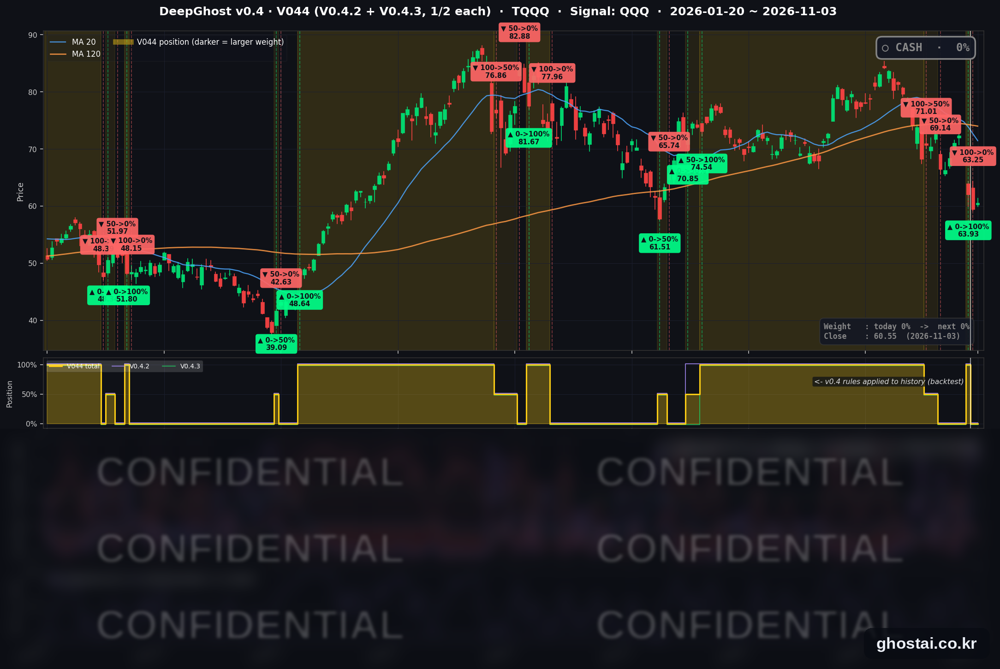

반도체 기술적 반등에 나스닥 0.83% 상승
· Ghost.AI 데일리 리포트
👻 매일 시그널과 히스토리를 홈페이지에서 한눈에 → www.ghostai.co.kr
회원 페이지 안내 — 회원 가입하시면 커버리지 전 종목의 원본 시그널과 분석 레포트를 매일 확인하실 수 있습니다. 회원 페이지는 블로그·유튜브보다 먼저 업데이트됩니다. 지금 베타 회원을 받고 있으며, 이메일과 필명만으로 가입하실 수 있고 서비스 사용료는 받지 않습니다. 이메일 확인 후 바로 이용하실 수 있습니다.
S&P 500 은 0.36%, 나스닥 종합은 0.83% 올랐지만 S&P 500 구성종목 493개 중 313개는 내렸습니다. 지수가 내리고 구성종목 다수가 오른 전일과 반대입니다. 반도체 ETF SOXX 는 사흘 동안 13.08% 내린 뒤 2.50% 기술적 반등했고, 10년물 금리는 4.952% 로 올랐습니다. 전략은 11월 2일 시가 63.25달러에 TQQQ 를 매도한 뒤 새 신호 없이 현금 보유 중입니다.
📊 오늘의 매매 신호
| 항목 | 내용 |
|---|---|
| 오늘의 신호 | 🟡 신규 신호 없음 — 전략은 현금 보유를 유지합니다 |
| 포지션 상태 | 💵 현금 보유 중 (OUT OF POSITION) |
| 현금 보유 기간 | 2026-11-02 ~ 2026-11-03 (2일, 11월 2일 시가 매도 후) |
| TQQQ 종가 | $60.55(+1.83%) |
TQQQ 시그널 — OUT OF POSITION
현재 상태: 현금 보유 중 | 11월 2일 시가 $63.25 매도

전략은 11월 2일(월) 시가 63.25달러에 TQQQ 를 매도한 뒤 현금 보유 중이고, 11월 3일에도 새 신호는 나오지 않았습니다. TQQQ 는 1.83% 오른 60.55달러로 마감했습니다. 이 종가는 매도가보다 4.27%, 6월 2일 최고 종가(87.22달러)보다 30.58% 낮습니다.
오늘 미국 시장 — 시황 요약
지수 마감
| 지수 | 종가 | 등락률 |
|---|---|---|
| S&P 500 | 7,568.92 | +0.36% |
| 나스닥 종합 | 25,372.01 | +0.83% |
| 다우존스 | 51,786.72 | -0.38% |
| 러셀 2000 (IWM) | 279.79 | +0.23% |
| QQQ (나스닥100) | 685.28 | +0.62% |
| TQQQ | 60.55 | +1.83% |
| 반도체 ETF (SOXX) | 465.00 | +2.50% |
S&P 500·나스닥 종합·QQQ 는 장중 내내 전일 종가 위에 있었고, 다우는 장중 내내 전일 종가 아래에 있었습니다. 시가총액이 큰 기술주가 올라 지수는 상승했지만, S&P 500 구성종목 중 오른 종목은 180개(36.5%)이고 등락률 중간값은 -0.54% 입니다. 이날 반등은 앞선 사흘 하락의 일부만 되돌렸습니다. QQQ 는 사흘 동안 6.14% 내린 뒤 0.62% 올랐고, 10월 6일 최고 종가(759.66달러)보다 9.79% 낮습니다.
국채 금리 동향
| 만기 | 11/2 종가 | 11/3 종가 | 전일 대비 |
|---|---|---|---|
| 3개월 | 3.982% | 4.025% | +4.3bp |
| 5년 | 4.693% | 4.743% | +5.0bp |
| 10년 | 4.894% | 4.952% | +5.8bp |
| 30년 | 5.269% | 5.324% | +5.5bp |
5년물 이상은 사흘 연속 내린 뒤 올랐습니다. 10년물 상승 폭 5.8bp 는 9월 23일 이후 가장 크고, 5년·10년·30년물 종가는 10월 29일 이후 가장 높습니다. 미 재무부 기준 2년물은 4.61% 로 2bp 올랐습니다. 10년물과 3개월물의 차이는 91.2bp 에서 92.7bp 로 벌어졌고 역전은 없습니다. 금리에 민감한 주택건설주(세부 업종 중간값 -4.44%)는 내렸지만 대형 기술주는 올랐습니다.
연준 발언 & 금리 패스
11월 3일에는 연준 위원의 새 공개 발언이 확인되지 않았습니다.
- 최근 발언 (10/30): 로건 댈러스 연은 총재는 "적어도 두 번 더 0.25%p 인상이 필요하다", 무살렘 세인트루이스 연은 총재는 "추가 긴축이 곧 필요하다"고 말했습니다. 바킨 리치먼드 연은 총재까지 세 명 모두 매파적입니다.
- 금리 경로: 연준은 10월 28일 기준금리를 3.75~4.00% 로 동결했습니다. CME FedWatch 기준 12월 인상 확률은 구인 보고서 발표 전 오전 기사 기준 약 73% 로, 일주일 전(80%)보다 낮습니다. 기사마다 71~77% 로 차이가 있고, 발표 이후 수치는 확인하지 못했습니다. 다음 확인 지점은 11월 6일 10월 고용보고서와 11월 10일 10월 CPI 입니다.
오늘의 핵심 이슈
- S&P 500 은 올랐지만 구성종목 63% 는 내렸습니다. 전일에는 지수가 0.51% 내리고 343개 종목이 올랐는데, 이날은 반대로 나타났습니다. 정보기술 업종 중간값은 -1.64% 에서 +1.51% 로 바뀌었고, 전일 오른 필수소비재(-1.90%)·소재(-1.57%)·경기소비재(-1.07%)·금융(-0.86%)은 내렸습니다. 11개 업종 중 8개의 중간값 부호가 전일과 바뀌었습니다.
- 반도체가 반등했고, 장 마감 후 AMD 실적과 전망은 시장 예상을 웃돌았습니다. AMD 는 정규장에서 3.65% 오른 뒤 3분기 매출 133.8억 달러(예상 130.6억 달러), 데이터센터 매출 85.5억 달러(전년 대비 +97%), 4분기 매출 전망 약 170억 달러(예상 162.3억 달러)를 발표했습니다. 시간외 상승 폭은 "7% 넘게"와 "약 6%"로 보도가 갈립니다. 애플은 12월 분기 매출총이익률 전망 45~46% 가 시장 예상보다 낮았고 주가는 1.90% 내렸습니다.
- 9월 구인 건수는 750만 건으로 예상(약 710만 건)보다 많았습니다. 8월 수치는 720만 건으로 상향 수정됐습니다. 이날 전 만기 금리가 함께 올랐습니다. 중간선거 결과는 이 글을 쓰는 시점(미 동부시간 11월 3일 오후 7시 무렵)까지 확인되지 않았습니다. 상·하원 다수당 판정이 나오지 않았고, 시장 반응은 11월 4일에 확인합니다.
변동성 & 투자심리
VIX 는 21.15 에서 20.83 으로 1.51% 내렸습니다. 21.66 에 출발해 장중 20.29 까지 내렸고, 선거 결과를 앞두고도 전일보다 낮게 마감했습니다. 공포탐욕 지수는 11월 3일 값을 확인하지 못했습니다. 지수와 VIX 는 안정됐지만 구성종목 다수가 내렸고 선거 결과가 나오지 않아, 시장 심리는 중립입니다.
매크로 & 원자재
| 품목 | 종가 | 등락률 |
|---|---|---|
| 원유 ETF (USO) | $158.17 | +0.83% |
| 금 ETF (GLD) | $359.26 | -0.66% |
- 원유: 미국의 이란 케슘섬 공격 보도(월스트리트저널)와 협상 기대가 엇갈렸고, USO 는 장중 전일 대비 -0.23%~+1.05% 범위에서 움직인 뒤 0.83% 올랐습니다. 전일에는 7.08% 내렸습니다.
- 금: GLD 는 0.66% 내렸습니다.
주요 종목 동향
| 종목 | 종가 | 등락률 | 비고 |
|---|---|---|---|
| AVGO | 332.13 | +3.07% | 반도체 반등 |
| MSFT | 520.99 | +2.74% | |
| MU | 855.10 | +2.58% | 앞선 사흘 -15.22% |
| META | 621.03 | +2.36% | |
| NVDA | 206.69 | +2.29% | 앞선 사흘 -6.18% |
| AMZN | 250.69 | +2.06% | |
| NFLX | 63.42 | +1.73% | |
| QCOM | 164.43 | +1.45% | 11/4 장 마감 후 실적 |
| INTC | 60.55 | +0.97% | 앞선 사흘 -37.22% |
| GOOGL | 280.03 | +0.37% | |
| TSLA | 398.50 | -1.32% | |
| AAPL | 331.90 | -1.90% | 실적 첫 반응, 시가 -3.77% 에서 하락 폭 축소 |
커버리지 12종목 중 10종목이 올랐습니다. 반도체 전반이 올랐고, 애플·테슬라가 내렸습니다.
다음 일정 (미 동부시간)
- 11/4(수) 중간선거 결과와 AMD 실적에 대한 첫 정규장 반응 / 08:15 10월 ADP 민간 고용 / 08:30 9월 무역수지 / 미 재무부 분기 국채 발행 계획 / 10:00 10월 ISM 서비스업 지수 / 장 전 우버 실적 / 장 마감 후 퀄컴·Arm 실적
- 11/5(목) 08:30 3분기 생산성·단위노동비용, 신규 실업수당 청구
- 11/6(금) 08:30 10월 고용보고서 / 12:15 보먼 연준 부의장 대담
- 11/10(화) 08:30 10월 CPI
- 11/13(금) 08:30 10월 PPI
- 11/18(수) 14:00 10월 FOMC 의사록
Ghost.AI — Quantitative AI Investment
Model: DeepGhost v0.4 | Transformer-Based Deep Learning
Coverage: 14 tickers | Updated every trading day after US market close
⚠️ 본 자료는 정보 제공 목적으로만 작성되었으며 투자 권유가 아닙니다. 모든 투자의 책임은 투자자 본인에게 있습니다. 과거 성과가 미래 수익을 보장하지 않습니다.
[유의사항]
- 본 서비스는 불특정 다수를 대상으로 발행되는 단방향 정보 제공 서비스이며, 투자자 개인의 재산 상황·투자 목적·위험 선호도를 반영한 개별 투자 조언이 아닙니다.
- 고스트에이아이 주식회사는 고객과 쌍방향 의사소통(개별 상담, 맞춤형 자문 등)을 제공하지 않습니다.
- 본 콘텐츠는 투자 권유 또는 매매 주문의 청약·청약의 권유에 해당하지 않으며, 최종 투자 판단 및 그에 따른 손익의 책임은 전적으로 투자자 본인에게 있습니다.
고스트에이아이 주식회사